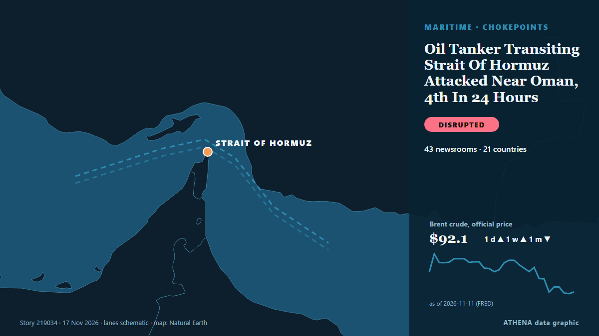

Oil Tanker Transiting Strait Of Hormuz Attacked Near Oman, 4th In 24 Hours

The Iran Navy said the tanker was travelling in a restricted area with its navigation switched off. από NDTV
Τι άλλαξε 33 νέες αναφορές από 22 μέσα τις τελευταίες 24 ώρες.
Δείτε τις πηγές ›Τεκμήριωση: Περιορισμένη
Αναφέρθηκε ανεξάρτητα από 43 μέσα σε 21 χώρες από τις 14 Νοε, πρώτο το Khaama Press· η κάλυψη εξασθενεί. Το ATHENA εκτιμά τον κίνδυνο αυξημένο (5.8/10), κυρίως λόγω της σοβαρότητάς του και της εμβέλειάς του. Βεβαιότητα 64% (μέτρια): το επιβεβαιώνουν 43 ανεξάρτητα μέσα, μέση αξιοπιστία 76%. Μέσα ανά χώρα: Ινδία (6), Ηνωμένο Βασίλειο (4), Αζερμπαϊτζάν (3). Κάλυψη: 14 Νοε έως 17 Νοε, 73 ώρες.
Γιατί έχει σημασία: Τα Στενά του Ορμούζ συνδέουν τον Περσικό Κόλπο με τον ανοιχτό ωκεανό. Από εκεί περνά περίπου το ένα πέμπτο του πετρελαίου που καταναλώνεται παγκοσμίως, γι' αυτό επιθέσεις σε πλοία ή απειλές κλεισίματος επηρεάζουν μέσα σε λίγες ώρες τις τιμές της ενέργειας και τα ασφάλιστρα.
Τι άλλαξε: 33 νέες αναφορές από 22 μέσα στο 24ωρο έως 17 Νοε.
Πρώτη διατύπωση: Hormuz Shipping Traffic Remains 65% Below Pre-War Levels
ΑυτοματοποιημένοΕπιλέχθηκε, ομαδοποιήθηκε και βαθμολογήθηκε με τη δημοσιευμένη μέθοδο της ATHENA από 33 ανεξάρτητα μέσα. Ο τίτλος είναι του μέσου· οι προτάσεις της ATHENA ακολουθούν σταθερά πρότυπα - δεν τις γράφει παραγωγική ΤΝ. Πώς λειτουργεί →
Πώς να διαβάσετε αυτή τη σελίδα
- Τι διαβάζετε
- 43 μέσα σε 21 χώρες ανέφεραν αυτό το γεγονός. Οι αναφορές παρακάτω εμφανίζονται με τη σειρά που δημοσιεύτηκαν· κάθε τίτλος ανοίγει το αρχικό άρθρο. Το ATHENA δεν γράφει δικά του ρεπορτάζ.
- Η εκτίμησή μας
- Καμία εκτίμηση ακόμη — Δεν δίνουμε εκτίμηση ακόμη: οι αναφορές που συγκεντρώθηκαν δεν περιγράφουν όλες το ίδιο γεγονός. Προτιμούμε να μη δώσουμε εκτίμηση παρά να τη δώσουμε με λίγα στοιχεία.
- Πόσα στοιχεία υπάρχουν
- Περιορισμένη Αντιμετωπίστε τη σελίδα ως πρώιμη αναφορά.
Αφού αφαιρεθούν οι επαναλήψεις, τα άσχετα και τα παλιά στοιχεία, υπολογίζονται 15 από τις 40 αναφορές που παρατίθενται· το 42% των τίτλων αντιστοιχεί στο γεγονός.
Αρκετοί τίτλοι μεταφέρουν ισχυρισμούς μιας πλευράς. Ο ισχυρισμός δεν είναι επιβεβαιωμένο γεγονός.
- Τι δεν σημαίνει
- Το ATHENA μετρά πώς καλύπτεται ένα γεγονός, όχι αν είναι αληθές. Δεν είναι πρόβλεψη, κρίση για το ποιος έχει δίκιο ή συμβουλή.
- Τι θα την άλλαζε
- Αναφορές από άλλα ανεξάρτητα μέσα που δείχνουν διαφορετική εξέλιξη, ή σαφής επιβεβαίωση ή διάψευση από επίσημη πηγή.
Εκτίμηση R2 · ανανεώνεται με κάθε ενημέρωση της σελίδας. Το ATHENA δεν έχει δημοσιεύσει ακόμη ιστορικό επιδόσεων για αυτές τις εκτιμήσεις· όταν το κάνει, θα συνδέεται εδώ.
Με μια ματιά
Επιλέγεται, βαθμολογείται και γράφεται από τη δημοσιευμένη μεθοδολογία του ATHENA. Κανένας συντάκτης δεν παρεμβαίνει σε μεμονωμένα γεγονότα. Πώς παράγεται ›
| 14 Nov 03:30 UTC | 1 |
|---|---|
| 14 Nov 06:30 UTC | 0 |
| 14 Nov 09:30 UTC | 1 |
| 14 Nov 12:30 UTC | 0 |
| 14 Nov 15:30 UTC | 0 |
| 14 Nov 18:30 UTC | 0 |
| 14 Nov 21:30 UTC | 0 |
| 15 Nov 00:30 UTC | 0 |
| 15 Nov 03:30 UTC | 0 |
| 15 Nov 06:30 UTC | 0 |
| 15 Nov 09:30 UTC | 1 |
| 15 Nov 12:30 UTC | 8 |
| 15 Nov 15:30 UTC | 4 |
| 15 Nov 18:30 UTC | 4 |
| 15 Nov 21:30 UTC | 7 |
| 16 Nov 00:30 UTC | 2 |
| 16 Nov 03:30 UTC | 2 |
| 16 Nov 06:30 UTC | 3 |
| 16 Nov 09:30 UTC | 3 |
| 16 Nov 12:30 UTC | 7 |
| 16 Nov 15:30 UTC | 4 |
| 16 Nov 18:30 UTC | 2 |
| 16 Nov 21:30 UTC | 3 |
| 17 Nov 00:30 UTC | 6 |
| 17 Nov 03:30 UTC | 6 |
| 17 Nov 06:30 UTC | 3 |
| 17 Nov 09:30 UTC | 1 |
| 14 Nov 04:12 UTC | 0.0 |
|---|---|
| 14 Nov 12:25 UTC | 2.0 |
| 16 Nov 13:46 UTC | 0.9 |
| 17 Nov 12:05 UTC | 2.4 |
| 17 Nov 12:14 UTC | 4.3 |
| 17 Nov 12:36 UTC | 5.8 |
| 17 Nov 12:36 UTC | 5.8 |
Γιατί αυτοί οι αριθμοί
Σημασία
Πόσο πολύ και πόσο εμφανώς αναφέρεται η είδηση.
Κίνδυνος
Τι περιγράφουν οι αναφορές, βαθμολογημένο για πιθανή ζημιά. Δεν είναι πρόβλεψη.
Βεβαιότητα
Πόσο καλά την στηρίζουν οι ανεξάρτητες πηγές.
Εμφανίζεται 64% (υπολογισμός 88%): η αξιολόγηση τεκμηρίωσης είναι περιορισμένη, οπότε η βεβαιότητα κρατιέται στο μέτριο.
Η κάλυψη — ποιος το ανέφερε και πότε
ο τίτλος όπως δημοσιεύτηκε · ανοίγει το πρωτότυπο- Khaama Press · ΑφγανιστάνHormuz Shipping Traffic Remains 65% Below Pre-War Levels
- AzerNews · ΑζερμπαϊτζάνStrait of Hormuz shipping traffic remains far below pre-conflict levels
- Mehr News (English) · ΙράνUKMTO reports maritime incident near Strait of Hormuz
- Arab Times · ΚουβέιτIndian shipping authorities report tanker attack east of Strait of Hormuz
- The Hindu · ΙνδίαTanker driver abducted and tortured over unpaid salary; four booked
- Anadolu Agency (English) · ΤουρκίαIran warns its response to any new attack ‘will not be limited or short-lived’
- Business Recorder · ΠακιστάνGulf bourses slide as Hormuz tensions and houthi strikes rattle traders
- TASS (English) · ΡωσίαSupertanker with oil sinks in Persian Gulf — IRGC
- TRT World · Τουρκία'Unauthorised supertanker' carrying over 2M barrels of oil sinks in Hormuz: Iran
- People Daily · ΚένυαUS condemns Iran, Houthi attacks on Saudi Arabia, demands end to escalation
- The Business Times · ΣιγκαπούρηBaltic Exchange Shipping Insights
- APA (English) · ΑζερμπαϊτζάνIRGC announces sinking of supertanker in Persian Gulf
- The Rio Times · ΒραζιλίαIran Says Mine Blasts Sank a Supertanker
- NDTV · ΙνδίαIran Claims Tanker With 2 Million Barrels Of Oil Sank In Strait Of Hormuz
- AzerNews · ΑζερμπαϊτζάνSupertanker carrying oil reportedly sinks after explosion in Persian Gulf
- The Maritime Executive · Ηνωμένες ΠολιτείεςArabian Sea Ports are Booming as the Conflict Drags On
- Deccan Herald · ΙνδίαWater tanker driver assaulted over pending salary in Bengaluru; three arrested
- OilPrice.com · Ηνωμένο ΒασίλειοThe $130 Billion Oil Boom Fueled by the Iran War
- investingLive (ForexLive) · INTIran says supertanker with 2 million barrels sank after Hormuz mine strike, unconfirmed
- investingLive (ForexLive) · INTICYMI - Trump extends Jones Act waiver 90 days, foreign tankers moving oil in US
- Simple Flying · Ηνωμένες ΠολιτείεςWhy The SR-71 Blackbird Needed Special KC-135 Tankers Just To Refuel
- Business Recorder · ΠακιστάνIran says supertanker with 2m barrels of oil sank in Gulf
- investingLive (ForexLive) · INTUS futures open firmer as Nasdaq leads, oil slips despite Iran tanker claims: 5 things
- Al Jazeera English · ΚατάρIran war live: Tensions rise as USS Theodore Roosevelt warship arrives
- Fox News (World) · Ηνωμένες ΠολιτείεςBlinken warns US ground invasion of Iran would be 'absolute disaster' as Tehran escalates attacks
- New Straits Times · ΜαλαισίαIran claims supertanker carrying 2mil barrels of oil sank in Hormuz
- Cyprus Shipping News · ΚύπροςDaehan Shipbuilding lands two tanker order
- The Herald (Scotland) · Ηνωμένο ΒασίλειοFire survivor speaks for first time about attack that killed her boyfriend
- The Scotsman · Ηνωμένο ΒασίλειοVictim of 2017 New Year fire attack which killed boyfriend speaks out in documentary
- The National · Ηνωμένα Αραβικά ΕμιράταMiddle East latest: Pakistan awaits US response to latest Iran proposals
- Egypt Independent · ΑίγυπτοςIran raises stakes with new drone attacks as Trump signals a waiting game
- New Straits Times · ΜαλαισίαGovernment department ambulance catches fire at Penang Hospital
- Offshore Technology · Ηνωμένο ΒασίλειοOil prices edge up as reported Hormuz incidents raise concern
- IRNA (English) · ΙράνEcuadorian fishermen sue US over attack on their vessel
- Euronews English · ΓαλλίαUS and Iran slide closer to fresh all-out war as new exchange of fire increases
- Project Syndicate · INTThe Global Economy After the Iran War Ends
- Marine Insight · ΙνδίαSupertanker With 2 Million Barrels Of Oil Sinks After Hitting Mine In Strait Of Hormuz, Iran Says
- Marine Insight · ΙνδίαIndian Seafarer Stranded In Iran Gets Emergency Certificate To Return Home To Kerala
- Shafaq News (English) · ΙράκMissile lands near Iranian Kurdish Komala camp in Erbil
- NDTV · ΙνδίαOil Tanker Transiting Strait Of Hormuz Attacked Near Oman, 4th In 24 Hours